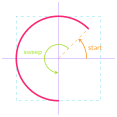

Complex Shapes
Jed Rembold
October 16, 2023
Announcements
- PS4 due tonight!
- Exam 1 feedback posted!
- We don’t have time in class today, but I’ll see about recording a video walkthrough of each problem in case you want to review or examine where you went awry.
- On Friday, we will have class in Eaton 209 – the BoT is taking this room
- Section Leaders are working on Project 1 feedback, and should be out early this week
- Project 2: Breakout is due next Monday!
- Guide out this afternoon
- Polling: rembold-class.ddns.net
Exam Thoughts
- Quick Stats:
- High: 104%
- Mean: 78%
- Median: 83%
- Stdev: 23%
- If all did not go as you’d hoped, there likely isn’t cause for
alarm!
- Just 10% of your class grade
- Know now how to better study and prepare for the next exams
- If it went catastrophically, we should probably plan to meet
- Need to identify where the issues are so as to determine if future tests will significantly improve
Review Question!
When the function to the right is run, what does the screen look like just after 1 second has passed?


def rev_q():
def step():
rect.move(1, 1)
def once():
rect.set_filled(True)
gw = GWindow(200, 200)
rect = GRect(0, 0, 25, 25)
gw.add(rect)
gw.set_interval(step, 20)
gw.set_timeout(once, 1000)Simulation
- Our technique of piecing together many small movements to resemble motion is not limited to just making pretty animations!
- Physicists use similar techniques to break complex problems into
simple pieces
- “In this small time interval, the motion is simple”
- Chain together many time intervals to construct the full motion
- There are many areas where this is the only way to solve a problem, as we can not write down equations to express the result otherwise!
The Two Body Problem
from pgl import GWindow, GOval, GLine
from pgl_tools import create_filled_circle
def two_body():
def step():
# Compute forces and accelerations
dx = planet1.get_x() - planet2.get_x()
dy = planet1.get_y() - planet2.get_y()
r3 = (dx ** 2 + dy ** 2) ** (3 / 2)
ax = 1000 / r3 * dx
ay = 1000 / r3 * dy
# Update velocities
gw.vx1 += -ax
gw.vy1 += -ay
gw.vx2 += ax
gw.vy2 += ay
# Augment history paths
path1 = GLine(
planet1.get_x() + 10,
planet1.get_y() + 10,
planet1.get_x() + 10 + gw.vx1,
planet1.get_y() + 10 + gw.vy1,
)
path1.set_color("red")
path1.set_line_width(3)
path2 = GLine(
planet2.get_x() + 10,
planet2.get_y() + 10,
planet2.get_x() + 10 + gw.vx2,
planet2.get_y() + 10 + gw.vy2,
)
path2.set_color("cyan")
path2.set_line_width(3)
# Move planets
planet1.move(gw.vx1, gw.vy1)
planet2.move(gw.vx2, gw.vy2)
gw.add(path1)
gw.add(path2)
gw = GWindow(600, 600)
# Defining state variables
gw.vx1, gw.vy1 = 0, 1
gw.vx2, gw.vy2 = 0, -1
planet1 = create_filled_circle(200, 200, 10, "red")
planet2 = create_filled_circle(400, 200, 10, "cyan")
gw.add(planet1)
gw.add(planet2)
gw.set_interval(step, 30)
if __name__ == '__main__':
two_body()Something to smile about
- The
GArcclass represents an arc formed by taking a section of the perimeter of an oval. - 3 things necessary:
- The bounding rectangle geometry (upper left corner and width and height)
- The starting angle (in degrees)
- The sweep angle (in degrees) which is how far the arc extends
- Negative angles move in the clockwise direction

Fillable Arcs
- The
GArcclass is aGFillableObject, and so you can call.set_filled()on aGArcobject - Filled like a pie-shaped wedge formed between the center of the bounding box and the starting and end points of the arc
def filled_arc():
gw = GWindow(400, 400)
arc = GArc(50, 50,
350, 350,
90, 135)
arc.set_color("orange")
arc.set_filled(True)
gw.add(arc)
The GPolygon class
- Used to represent graphical objects bounded by line segments
- Polygons consist of several vertices bounded by edges
- Location not fixed in upper left, but at some convenient reference point
- Often a convenient reference point is near the center of the object, but it doesn’t need to be
GPolygons areGFillableObjects, so they can be filled
Polygonal Construction
- The
GPolygonfunction creates an empty polygon, to which you then can add vertexes - Can create a vertex by calling
.add_vertex(x,y)on theGPolygonobjectxandymeasured relative to the reference point
- Vertexes past the first can be defined in a few ways:
.add_vertex(x,y)adds another new vertex relative to the reference point.add_edge(dx,dy)adds a new vertex relative to the preceding vertex.add_polar_edge(r, theta)adds a new vertex relative to the previous using polar coordinates
Triangle By Vertex
def triangle_by_vertex():
def create_triangle(b, h):
tri = GPolygon()
tri.add_vertex(-b / 2, h / 2)
tri.add_vertex(b / 2, h / 2)
tri.add_vertex(0, -h / 2)
return tri
gw = GWindow(500, 500)
triangle = create_triangle(200, 200)
triangle.set_filled(True)
triangle.set_color("red")
gw.add(triangle, 250, 250)Triangle by Polar Edge
def triangle_by_polar_edge():
def create_eq_triangle(side):
tri = GPolygon()
tri.add_vertex(0, 0)
for i in range(0, 360, 120):
tri.add_polar_edge(side, i)
return tri
gw = GWindow(500, 500)
triangle = create_eq_triangle(100)
triangle.set_filled(True)
triangle.set_color("green")
gw.add(triangle, 250, 250)Compound Objects
- The
GCompoundclass makes it possible to combine several graphical objects so that the entire structure behaves as a single object - Can be thought of as a combination of
GWindowandGObject- You can add objects to it, but then you can also add it (and everything in it) to a window as a single unit
- Uses its own coordinate system relative to a reference point
- When adding objects to the
GCompound, you place them relative to the reference point - When adding the
GCompoundto a canvas, you set the location of the reference point
- When adding objects to the
And my Axe!
def my_axe():
def create_axe():
axe = GCompound()
shaft = GRect(-15, 0, 30, 300)
shaft.set_filled(True)
shaft.set_color("brown")
axe.add(shaft)
blade = GPolygon()
blade.add_vertex(0, 0)
blade.add_vertex(200, -50)
blade.add_vertex(200, 50)
blade.set_filled(True)
blade.set_color("gray")
axe.add(blade, -80, 50)
return axe
gw = GWindow(500, 500)
axe = create_axe()
gw.add(axe, 250, 100)Project 2: Breakout!
- Project 2 is recreating the classic arcade game Breakout!
- Guide will be posted today, not due until October 23
- Get an early start! Finish up PS4 tonight if you need, but start Breakout tomorrow!
Breakout History
- The popular Breakout arcade game was released by Atari in 1976
- Atari founder Nolan Bushnell wanted a new game that would build on the success of the earlier game Pong. He assigned Steve Jobs to develop the game, promising a bonus if the game required a small number of chips.
- As Wikipedia tells the story, “Jobs had little specialized knowledge of circuit board design but knew [his friend Steve] Wozniak was capable of producing designs with a small number of chips. He convinced Wozniak to work with him, promising to split the fee evenly between them.”
- Wozniak completed the game design in four days, but Jobs never told him about the bonus offer. Jobs was paid \(\$5,000\), but Wozniak received only \(\$350\).
- Jobs and Wozniak co-founded Apple Computer the following year, which has grown to be the largest corporation in the world by market capitalization.
Breakout Basics
- Breakout is a game in which the player attempts to break all the colored bricks by causing a bouncing ball to collide with them
- The player controls a paddle at the bottom of the screen which the
ball will bounce off
- The paddle can only move left and right
- If the ball makes it past the paddle to the bottom of the screen,
the player loses a life
- Lose 3 lives and it is game over!
Breakout Milestones
- Breakout is broken up over 5 milestones
- You have already seen or written pieces of similar code to many of
the milestones!
- Milestone 1: PS4 brick pyramid
- Milestone 3: Section bouncy ball problem (this week)